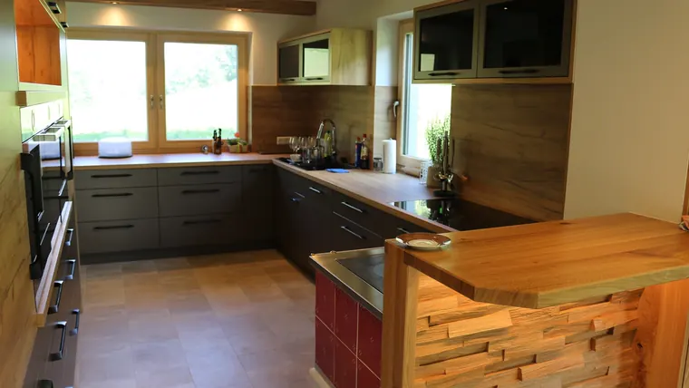

01Küchen
Vom Grundriss bis zur MontageEine Küche muss zum Raum passen, nicht umgekehrt. Wir planen mit Grundriss, Ansichten und Visualisierung – und bauen dann genau das. Im Bild: matte dunkle Fronten, ein eingebundener Tischherd und eine Bartheke mit Spaltholzfront.
- Planung & Visualisierung
- Tischherd eingebunden
- Bartheken
- Geräteeinbau